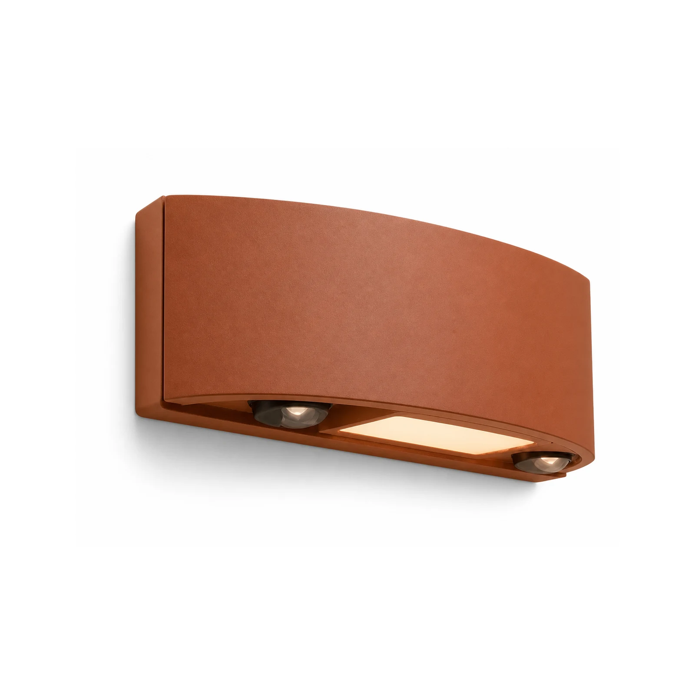
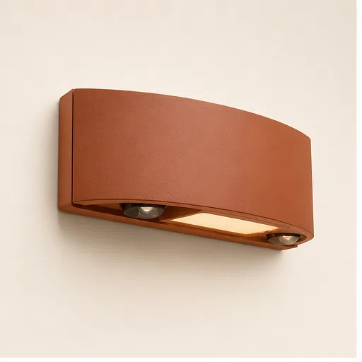
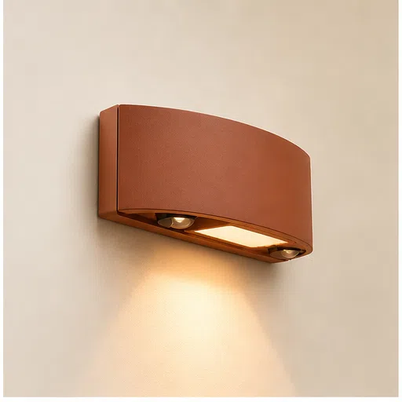
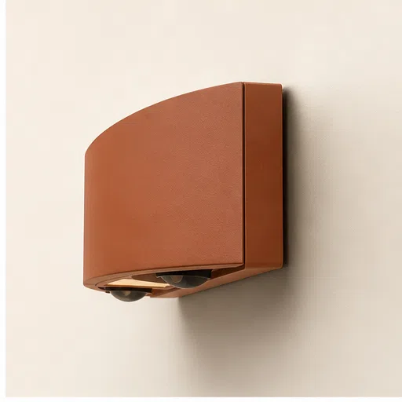
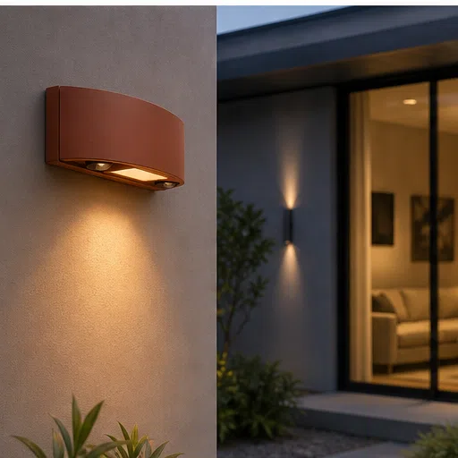
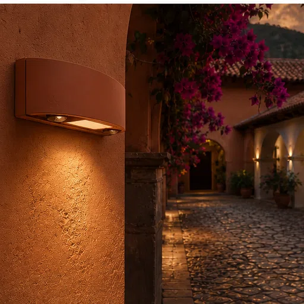

PIR Motion Sensor Wall Light
An anti-vandal solar wall light for perimeter walls and commercial properties — 800 lumens triggered by dual PIR sensors, sealed to IP65 and powered by a 4000mAh LiFePO4 battery.

Compact, tamper-resistant wall lighting that triggers on movement — built for boundary walls, yards and entrances.





This is the fixture for boundary walls and building perimeters where security matters and tampering is a risk. A robust, low-profile housing resists vandalism, while dual PIR sensors widen the detection field to 8–12 m so movement triggers light reliably across an entrance or yard. With its own LiFePO4 battery, it stays armed through power cuts and load-shedding.
Specifications
| Luminous flux | 800 lm |
|---|---|
| Motion sensor | Dual PIR, 8–12 m detection |
| IP rating | IP65 — dustproof, water-jet resistant |
| Battery | 4000mAh LiFePO4 |
| Runtime | 8–12 hours per charge |
| Build | Anti-vandal housing, wall-mounted |
| Certification | CE + RoHS |
| Customisation | OEM / ODM — logo, packaging, spec tuning |
Why buyers choose it
Dual-PIR coverage. Two sensors widen the trigger zone versus single-PIR units — fewer blind spots along a wall line.
Anti-vandal build. Designed for exposed boundary walls in commercial and residential security settings.
LiFePO4 reliability. 2,000+ cycles and heat tolerance for years of outdoor service. Why the battery chemistry matters →
Certified & OEM-ready. CE + RoHS certificates with every quotation; custom branding and packaging available.